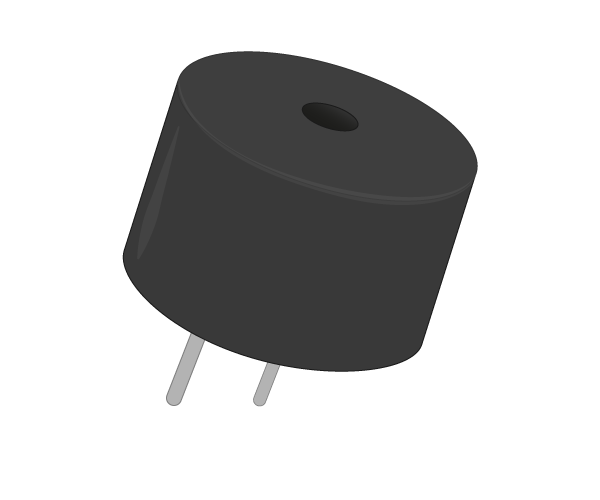

Acknowledgement
This guide is an adapted version of the Physical Computing with Python by the Raspberry Pi Foundation.
What you already need to know
- Basic programming concepts
- Basic understanding of programming in Rust
It is highly recommended that you complete atleast the first 3 chapters of The Rust Programming Language Book v2
Caveats
The guide is based on the rust_gpiozero crate which is still in development. This guide does not currently implement all of the steps in the original Physical Computing with Python guide.
Feedback and pull requests are welcome!
Introduction
What you will do
Learn how to use the GPIO pins on your Raspberry Pi to interface with electronic components, such as LEDs and PIRs using the Rust programming language.
What you will learn
This resource covers elements from the following strands of the Raspberry Pi Digital Making Curriculum
- Use basic programming constructs to create simple programs
- Use basic digital, analogue, and electromechanical components
What you will need
Hardware
You will need a Raspberry Pi with an SD card and the usual peripherals. You will also need the following components for partilular steps:
-
Step 4: 1x LED, Female-to-female jumper leads, 1x 330Ω Resistor
-
Step 5: 1x LED, Female-to-female jumper leads, 1x 330Ω Resistor
-
Step 6: 1x LED, Female-to-female jumper leads, 1x 330Ω Resistor
-
Step 7: 1x Tactile button, Male-to-female jumper leads, 1x Solderless breadboard
-
Step 8: 1x LED, Female-to-female jumper leads, 1x 330Ω Resistor, 1x Tactile button, Male-to-female jumper leads
-
Step 9: 1x Tactile button, Male-to-female jumper leads
-
Step 10: 1x Buzzer, Male-to-female jumper leads, 1x Solderless breadboard
-
Step 11: 3x LEDs, 3x 330Ω Resistors, Buzzer, Male-to-female jumper leads, 1x Tactile button, 1x Solderless breadboard
Here is a complete list of components required for Physical Computing with Python
| 1x Solderless breadboard | Male-to-female jumper leads | Female-to-female jumper leads | Male-to-male jumper leads |
|---|---|---|---|
 |  |  |  |
| 1x Tactile button | 3x LEDs | Ultrasonic distance sensor | Passive infrared motion sensor |
|---|---|---|---|
 |  |  |
| Light Dependent Resistor | 2x 5V Micro Metal Gearmotor | 3x 330Ω Resistor | 470Ω Resistor |
|---|---|---|---|
 |  |  |  |
| 1x 1μF Capacitor | Buzzer | Motor Controller | Battery Pack |
|---|---|---|---|
 |  |  |
Images source: Raspberry Pi Foundation
Software
You will need to install Rust on your Raspbery Pi.
Follow the steps here.
GPIO pins
One powerful feature of the Raspberry Pi is the row of GPIO pins along the top edge of the board. GPIO stands for General-Purpose Input/Output. These pins are a physical interface between the Raspberry Pi and the outside world. At the simplest level, you can think of them as switches that you can turn on or off (input) or that the Pi can turn on or off (output).
The GPIO pins allow the Raspberry Pi to control and monitor the outside world by being connected to electronic circuits. The Pi is able to control LEDs, turning them on or off, run motors, and many other things. It's also able to detect whether a switch has been pressed, the temperature, and light. We refer to this as physical computing.
There are 40 pins on the Raspberry Pi (26 pins on early models), and they provide various different functions.
If you have a RasPiO pin label, it can help to identify what each pin is used for. Make sure your pin label is placed with the keyring hole facing the USB ports, pointed outwards.
 Image source: Raspberry Pi Foundation
Image source: Raspberry Pi Foundation
If you don't have a pin label, then this guide can help you to identify the pin numbers:

Image source: Raspberry Pi Foundation
You'll see pins labelled as 3V3, 5V, GND and GP2, GP3, etc:
| 3V3 | 3.3 volts | Anything connected to these pins will always get 3.3V of power |
| 5V | 5 volts | Anything connected to these pins will always get 5V of power |
| GND | ground | Zero volts, used to complete a circuit |
| GP2 | GPIO pin 2 | These pins are for general-purpose use and can be configured as input or output pins |
| ID_SC/ID_SD/DNC | Special purpose pins | |
WARNING: If you follow the instructions, then playing about with the GPIO pins is safe and fun. Randomly plugging wires and power sources into your Pi, however, may destroy it, especially if using the 5V pins. Bad things can also happen if you try to connect things to your Pi that use a lot of power; LEDs are fine, motors are not. If you're worried about this, then you might want to consider using an add-on board such as the Explorer HAT until you're confident enough to use the GPIO directly.
Lighting an LED
LEDs are delicate little things. If you put too much current through them they will pop (sometimes quite spectacularly). To limit the current going through the LED, you should always use a resistor in series with it.
Try connecting the long leg of an LED to the Pi's 3V3 and the short leg to a GND pin. The resistor can be anything over about 50Ω.

Image source: Raspberry Pi Foundation
The LED should light up. It will always be on, because it's connected to a 3V3 pin, which is itself always on.
Now try moving it from 3V3 to GPIO pin 17:

Image source: Raspberry Pi Foundation
The LED should now turn off, but now it's on a GPIO pin, and can therefore be controlled by code.
Switching an LED on and off
GPIO Zero is a new Python library which provides a simple interface to everyday GPIO components. It comes installed by default in Raspbian.
rust_gpizerois a Rust implementation of the GPIO Zero library. It provides a simple interface to GPIO devices on the Raspberry Pi and is ideal for getting started with physical computing using Rust.
- Get the project code:
git clone https://github.com/rahul-thakoor/physcomp-rs-files
cd physcomp-rs-files
This directory contains the scaffolding for the whole lesson.
physcomp-rs-files/
├── Cargo.toml
├── README.md
├── examples
│ ├── button.rs
│ ├── buzzer.rs
│ ├── flash.rs
│ ├── led_button.rs
│ ├── onoff.rs
│ ├── switch.rs
│ └── trafficlights.rs
└── src
└── main.rs
- You can switch an LED on and off by writing a program. Open and edit the
onoff.rsfile in theexamplesdirectory using your preferred editor with the following:
extern crate rust_gpiozero; use rust_gpiozero::*; fn main() { // Tell the Pi which GPIO pin you are using let mut led = LED::new(17); // Make the led switch on led.on(); }
Save the changes you made to the onoff.rs file and exit the editor.
- From your project directory, build your project by entering the following commands:
cargo check
-
This will check if your program is able to compile.
-
To make the LED switch on, we need to actually compile the project and run it. Run the following command:
cargo run --example onoff
- Your LED should switch on.
When you run the program, you might get an error like this which may be cause by the
exportfunction insysfs_gpiocrate:thread 'main' panicked at 'Could not set pin to Output mode: Io(Error { repr: Os { code: 13, message: "Permission denied" } })', /checkout/src/libcore/result.rs:916:5 note: Run with `RUST_BACKTRACE=1` for a backtrace.The main cases in which this function will fail and return an error are the following: 1. The system does not support the GPIO sysfs interface 2. The requested GPIO is out of range and cannot be exported 3. The requested GPIO is in use by the kernel and cannot be exported by use in userspace ~Source
Try running the
cargo run --example onoffcommand again or usingsudoto run the compiled example, e.gsudo ./target/debug/examples/onoff
- To make it switch off you can edit the
examples/onoff.rsto the following:
extern crate rust_gpiozero; use rust_gpiozero::*; fn main() { // Tell the Pi which GPIO pin you are using let mut led = LED::new(17); // Make the led switch off led.off(); }
-
Run the command
cargo run --example onoffagain. Your LED should switch off. -
But that's not all you can do.
Flashing an LED
With the help of the sleep function and a little loop, you can make the LED flash.
- Edit the
examples/flash.rsfile in an editor with the following code:
extern crate rust_gpiozero; use rust_gpiozero::*; use std::thread::sleep; use std::time::Duration; fn main() { // Tell the Pi which GPIO pin you are using let mut led = LED::new(17); loop{ // Make the led switch on led.on(); // Let the LED stay on for one second sleep(Duration::from_secs(1)); // Make the led switch off led.off(); // Let the LED stay off for one second sleep(Duration::from_secs(1)); } }
- Run run flash example by running the following command:
cargo run --example flash
-
The LED should be flashing on and off. To exit the program press Ctrl + C on your keyboard.
-
In
rust_gpiozero, anLEDhas ablinkmethod which allows you to simplify the above code. The method takes two parameters,on_timeandoff_time.on_timeis the number of second(s) theLEDshould stay on andoff_timeis the number of second(s) that theLEDshould stay off. -
Modify your code to the following:
extern crate rust_gpiozero; use rust_gpiozero::*; fn main() { // Tell the Pi which GPIO pin you are using let mut led = LED::new(17); // let the LED blink indefinitely, staying on for 1 sec and off for 1 sec led.blink(1,1); }
-
Run the code. The LED should blink indefinitely, staying on for one second and off for one second. To exit the program press Ctrl + C on your keyboard.
-
Try changing the parameters to blink to make it blink faster or slower.
Using buttons to get input
Now you're able to control an output component (an LED), let's connect and control an input component: a button.
-
Connect a button to another GND pin and GPIO pin 22, like this:

- This time you'll need the
Buttoncomponent, and to tell it that the button is on pin 22. Edit theexamples/button.rsfile and write the following code in your new file:
extern crate rust_gpiozero; use rust_gpiozero::*; fn main() { // Create a button which is attached to Pin 22 let button = Button::new(22); }
- Now you can get your program to do something when the button is pushed. Add these lines:
# #![allow(unused_variables)] #fn main() { button.wait_for_press(); println!("button pressed"); #}
- The code should look like this:
extern crate rust_gpiozero; use rust_gpiozero::*; fn main() { // Create a button which is attached to Pin 22 let button = Button::new(22); // Wait for button to be pressed button.wait_for_press(); // Message to display when button is pressed println!("button pressed"); }
- Save the file and run the code with:
cargo run --example button
- Press the button and your text will appear.
Manually controlling the LED
You can now combine your two programs written so far to control the LED using the button.
- Edit the
examples/led_button.rsfile to add the following code:
extern crate rust_gpiozero; use rust_gpiozero::*; use std::thread::sleep; use std::time::Duration; fn main() { // Tell the Pi which GPIO pin you are using let mut led = LED::new(17); // Create a button which is attached to Pin 22 let button = Button::new(22); button.wait_for_press(); led.on(); sleep(Duration::from_secs(3)); led.off(); }
- Save and run your program. When you push the button the LED should come on for three seconds.
Making a switch
With a switch, a single press and release on the button would turn the LED on, and another press and release would turn it off again.
-
Modify the
examples/button.rsfile so that it looks like this:extern crate rust_gpiozero; use rust_gpiozero::*; use std::thread::sleep; use std::time::Duration; fn main() { // Tell the Pi which GPIO pin you are using let mut led = LED::new(17); // Create a button which is attached to Pin 22 let button = Button::new(22); loop{ button.wait_for_press(); led.toggle(); sleep(Duration::from_secs(1)); } } -
led.toggle();switches the state of the LED from on to off, or off to on. Since this happens in a loop the LED will turn on and off each time the button is pressed.